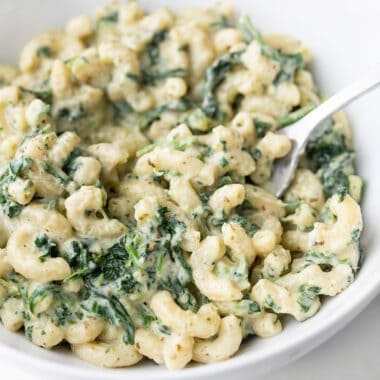

CREAMY PESTO MAC WITH SPINACH

pasta so creamy, it'll sound like last nights regret. add in shredded chicken for those extra gains.
WHAT YOULL NEED
- 2 cups uncooked macaroni ($0.50)
- 2 Tbsp butter ($0.22)
- 2 Tbsp all-purpose flour ($0.02)
- 2 cups whole milk ($0.60)
- 1/2 cup grated Parmesan ($0.53)
- 1/4 cup basil pesto ($0.55)
- 1/2 tsp salt ($0.02)
- Freshly cracked pepper ($0.03)
- 1/2 lb. frozen spinach ($0.80)
TOTAL COST = $3.27 FOR 6 SERVINGS
HOW TO MAKE IT
- thaw spinach and squeeze out excess water. boil macaroni for 7-10 mins.
- add butter and flour to small sauce pot over medium heat. stir until sauce gets creamy and bubbly. lol. heat for another min.
- whisk in milk until simmer. when sauce is thick, remove from heat.
- whisk in parmesan and pesto until smooth. season with salt and pepper.
- drain pasta. add in spinach. pour sauce on top.
- feast.
MACROS FOR YOU GYM RATS
Serving: 1 Cup ・ Calories: 333.58 cal ・ Carbs: 39.75 g ・ Protein: 12.33 g ・ Fat: 14.08 g
BACK